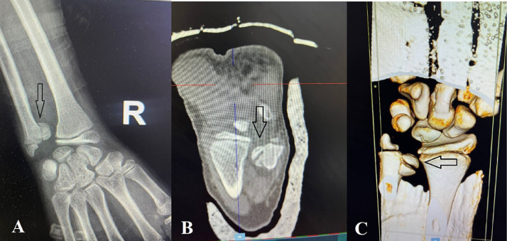

321 — Gãy trẻ em: Salter-Harris I–V, cành tươi & bạo hành / Pediatric fractures
Tags: pattern:gay-tre-em vung:xuong-tre-em score:Salter-Harris
Mức chắc chắn (certainty): tổng hợp y văn (literature synthesis) — nhóm tự biên từ y văn mở, chưa gắn ca nguyên văn đơn lẻ.
1. Tổng quan — sụn tiếp hợp là điểm yếu + càng qua mặt khớp càng hỏng tăng trưởng
- Sụn tiếp hợp (physis) yếu hơn xương-dây chằng trẻ em — TẠI SAO gãy trẻ hay đi qua sụn: sụn tăng sinh dễ tách hơn xương đặc.
- Salter-Harris I–V (SALTER: Slip, Above, Lower, Through, Erasure): I (trượt sụn), II (trên sụn + mảnh hành), III (dưới sụn vào mặt khớp), IV (xuyên sụn-mặt khớp-hành), V (ép sụn) — TẠI SAO III–IV nguy cơ ngừng tăng trưởng cao: đường gãy cắt mạch nuôi sụn + lệch mặt khớp.
- Sụn đầu xa trụ (ulna) gánh 70–80% tăng trưởng dài xương trụ — SH-IV lệch là mổ nắn giải phẫu + Kirschner.
2. Gamut gãy trẻ em (Gamut)
- Trượt sụn + di lệch nhẹ: SH-I/II — nắn kín + bột (tránh nắn nhiều lần hại sụn).
- Vào mặt khớp + lệch: SH-III/IV — mổ nắn + vít/K-wire (nguy cơ cầu xương).
- Phình vỏ + cong: torus/cành tươi (buckle/greenstick) — bột, liền nhanh.
- Nhiều tuổi xương + đối xứng + giả sụn: biến thể (cleft/pseudo-epiphysis) — đừng mổ oan.
- Gãy nhiều lứa tuổi + xoắn + sườn: bạo hành — báo cáo + skeletal survey.
3. Bảng so sánh phân biệt (ma trận đối chiếu)
| Thực thể (entity) | Hình ảnh điển hình | Chốt vào (rule-in) | Chốt loại (rule-out) | Gợi ý xác nhận |
|---|---|---|---|---|
| SH-I/II | Trượt/dời sụn + mảnh hành tam giác (II) | Sưng + đau sụn + tuổi tăng trưởng | Vào mặt khớp → III/IV | Nắn 1 lần + bột 6–8 tuần |
| SH-III/IV | Đường sáng xuyên mặt khớp + lệch khớp | Lệch mặt khớp + cần CT/3D | Không vào khớp → I/II | Mổ nắn giải phẫu + K-wire |
| Torus/cành tươi | Phình vỏ một bên / cong gãy một vỏ | Trẻ + ngã + vỏ còn liền | Xuyên 2 vỏ → gãy hoàn toàn | Bột, tái khám lệch thứ phát |
| Cleft/pseudo-sụn | Khe tròn nhẵn + đặc viền + ổn định stress | Tròn + đối xứng + không sưng nề | Sắc + sưng + chấn thương → gãy | Stress test + theo dõi, không mổ |

(A) XR: đường sáng xuyên sụn-mặt khớp trụ; (B–C) CT + 3D xác nhận lệch khớp. Nguồn: Al Hseinat et al., Radiol Case Rep 2026 Fig. 1, CC BY-NC-ND 4.0 (giữ nguyên bản).4. Protocol + flowchart
- X-quang 2 mặt + so sánh đối bên + CT/3D khi nghi vào khớp; stress test dưới gây mê khi phân biệt cleft.
flowchart TD
A[Gãy trẻ em] --> B{Vào mặt khớp?}
B -->|Không: I/II/torus| C[Nắn + bột]
B -->|Có: III/IV| D[CT + mổ nắn K-wire]
B -->|Tròn nhẵn + ổn định| E[Cleft: không mổ]
5. Cạm bẫy
- Cleft trụ giả SH-IV mổ oan — stress ổn định + viền đặc + đối bên là chốt (ca 2 trong bài gốc!).
- Nắn kín nhiều lần hại sụn thêm — thất bại 2 lần là mổ (ca 1!).
- Bạo hành bỏ sót — gãy sườn/xoắn nhiều lứa tuổi + chậm đưa đi = báo cáo + toàn xương.
6. Tự lượng giá — Blind Quiz
Ca 1 — Trẻ 12 tuổi ngã xe, đau biến dạng 2 cổ tay. Đọc XR + CT.
- Hỏi: đường gãy đi qua đâu? SH mấy? Nắn kín hay mổ?
Bấm để hiện đáp án
- Dấu hiệu (findings): đường sáng xuyên sụn tiếp hợp + mặt khớp + hành xương trụ, di lệch (mũi tên).
- Chẩn đoán (diagnosis): SH-IV đầu xa xương trụ — nắn kín thất bại 2 lần → mổ nắn + K-wire 1,2 mm (sụn trụ gánh 70–80% tăng trưởng).
- Nguồn: Al Hseinat et al., Fig. 1, CC BY-NC-ND 4.0 (nguyên bản).
Ca 2 — Khe trụ tròn nhẵn + stress ổn định + không sưng nề: gãy hay cleft? (Bảng mục 3.)
Bấm để hiện đáp án
- Cleft/pseudo-sụn: không mổ, bột + theo dõi (khác SH-IV sắc + lệch).
Ca 3 — Gãy sườn nhiều lứa tuổi + gãy xoắn đùi + đưa đi muộn: tai nạn hay bạo hành? (Bảng mục 3.)
Bấm để hiện đáp án
- Nghi bạo hành trẻ em: skeletal survey + báo cáo + hội chẩn bảo vệ trẻ.
Bài liên quan chéo
- 300 – Tổng quan MSK
- 310 – Xương phụ (vỏ kín vs gãy)
- 320 – Gãy & trật khớp (người lớn)
Không dùng để chẩn đoán độc lập khi chưa có người hướng dẫn.